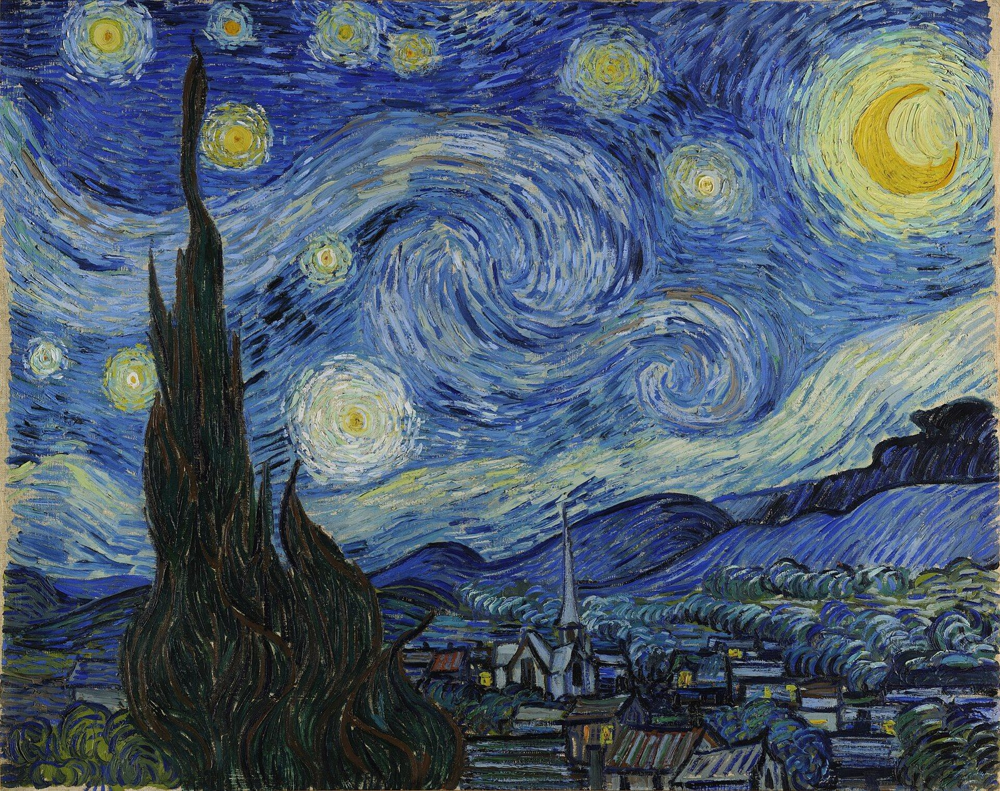
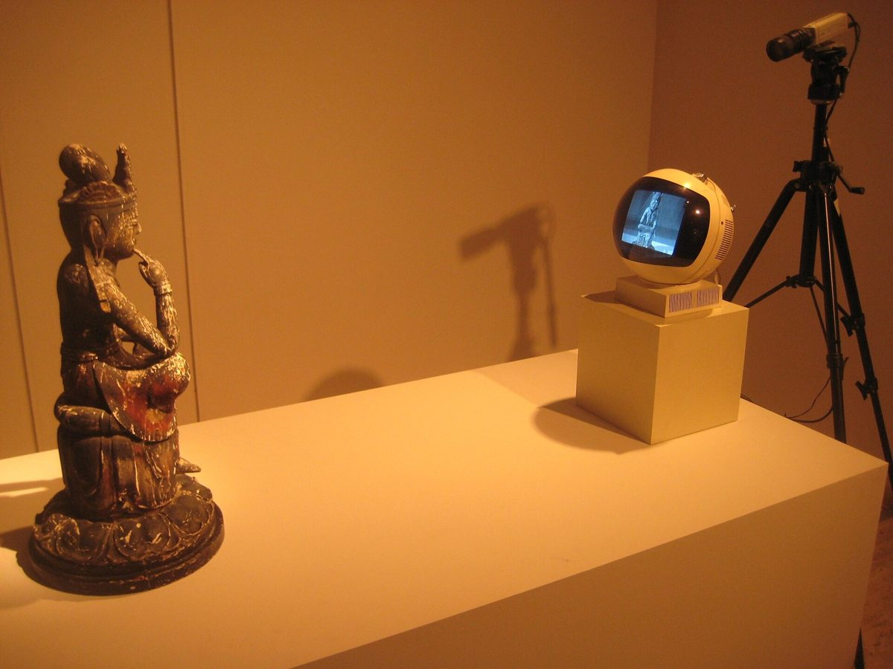

공지
- 9학년 감상수업 홈페이지를 열었습니다.
- 수행평가 기준과 반별 평가 날짜를 확인하세요.
- 연습용 수행평가지를 「수행평가지」 메뉴에 올렸습니다.
- 결석한 학생은 「일정·결석생」에서 보충 방법을 확인하세요.
이번 주,
수업 1에서 할 일
- 강의 영상으로 4가지 관점 익히기
- 관점마다 묻는 질문 정리하기
- 론 뮤익 「소년」으로 직접 써 보기오픈북 · 인터넷 검색 가능
- 다 쓰면 예시 답안을 펼쳐 비교하기
평가 날에는
도판만 보고, 준비한 자료나 미리 작성해 놓은 메모를 보지 않고 작성해야 합니다
- 4개 작품 중 하나를 제비뽑기로 정합니다.
- 뽑은 작품의 도판을 보며 4가지 관점으로 씁니다.
- 필기도구는 자유, 빨간색만 안 됩니다.
- 휴대폰·유인물은 가방에 넣습니다.
각 반 평가 날짜
| 9-1 | 수요일 | 11월 18일 |
| 9-2 | 금요일 | 11월 20일 |
| 9-3 | 금요일 | 11월 27일 |
| 9-4 | 금요일 | 11월 20일 |
| 9-5 | 수요일 | 11월 18일 |
연습 1 · 수업 1 론 뮤익, 「소년」, 1999
4
출제 작품 4점은
추후에 공개합니다

